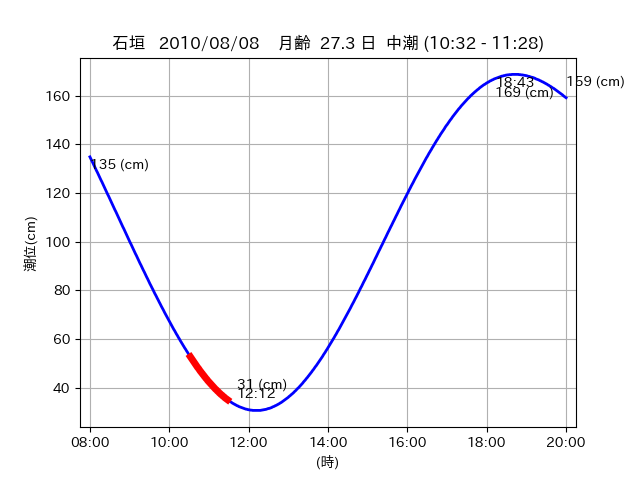
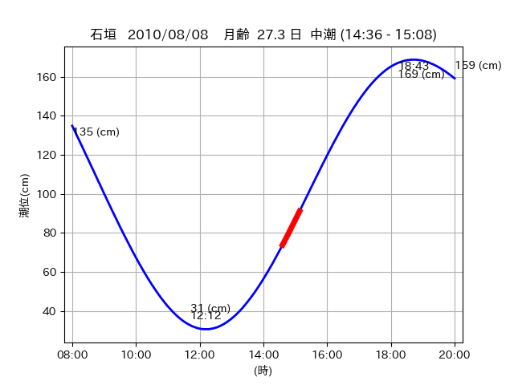

<!DOCTYPE html>
<html>
<head>
    
    <meta http-equiv="content-type" content="text/html; charset=UTF-8" />
    
        <script>
            L_NO_TOUCH = false;
            L_DISABLE_3D = false;
        </script>
    
    <style>html, body {width: 100%;height: 100%;margin: 0;padding: 0;}</style>
    <style>#map {position:absolute;top:0;bottom:0;right:0;left:0;}</style>
    <script src="https://cdn.jsdelivr.net/npm/leaflet@1.9.3/dist/leaflet.js"></script>
    <script src="https://code.jquery.com/jquery-3.7.1.min.js"></script>
    <script src="https://cdn.jsdelivr.net/npm/bootstrap@5.2.2/dist/js/bootstrap.bundle.min.js"></script>
    <script src="https://cdnjs.cloudflare.com/ajax/libs/Leaflet.awesome-markers/2.0.2/leaflet.awesome-markers.js"></script>
    <link rel="stylesheet" href="https://cdn.jsdelivr.net/npm/leaflet@1.9.3/dist/leaflet.css"/>
    <link rel="stylesheet" href="https://cdn.jsdelivr.net/npm/bootstrap@5.2.2/dist/css/bootstrap.min.css"/>
    <link rel="stylesheet" href="https://netdna.bootstrapcdn.com/bootstrap/3.0.0/css/bootstrap-glyphicons.css"/>
    <link rel="stylesheet" href="https://cdn.jsdelivr.net/npm/@fortawesome/fontawesome-free@6.2.0/css/all.min.css"/>
    <link rel="stylesheet" href="https://cdnjs.cloudflare.com/ajax/libs/Leaflet.awesome-markers/2.0.2/leaflet.awesome-markers.css"/>
    <link rel="stylesheet" href="https://cdn.jsdelivr.net/gh/python-visualization/folium/folium/templates/leaflet.awesome.rotate.min.css"/>
    
            <meta name="viewport" content="width=device-width,
                initial-scale=1.0, maximum-scale=1.0, user-scalable=no" />
            <style>
                #map_df62dad48b023526de0cbc40fc56e514 {
                    position: relative;
                    width: 2048.0px;
                    height: 1600.0px;
                    left: 0.0%;
                    top: 0.0%;
                }
                .leaflet-container { font-size: 1rem; }
            </style>
        
</head>
<body>
    
    
            <div class="folium-map" id="map_df62dad48b023526de0cbc40fc56e514" ></div>
        
</body>
<script>
    
    
            var map_df62dad48b023526de0cbc40fc56e514 = L.map(
                "map_df62dad48b023526de0cbc40fc56e514",
                {
                    center: [24.266, 123.806],
                    crs: L.CRS.EPSG3857,
                    ...{
  "zoom": 12,
  "zoomControl": true,
  "preferCanvas": false,
}

                }
            );

            

        
    
            var tile_layer_269fc59e282b9f1a2c816022083fad92 = L.tileLayer(
                "https://cyberjapandata.gsi.go.jp/xyz/seamlessphoto/{z}/{x}/{y}.jpg",
                {
  "minZoom": 0,
  "maxZoom": 18,
  "maxNativeZoom": 18,
  "noWrap": false,
  "attribution": "\u5730\u7406\u9662\u5730\u56f3",
  "subdomains": "abc",
  "detectRetina": false,
  "tms": false,
  "opacity": 1,
}

            );
        
    
            tile_layer_269fc59e282b9f1a2c816022083fad92.addTo(map_df62dad48b023526de0cbc40fc56e514);
        
    
            var marker_92d07e55a4c0cee9a9b8ac57d46d8fd4 = L.marker(
                [24.2729, 123.7877],
                {
}
            ).addTo(map_df62dad48b023526de0cbc40fc56e514);
        
    
            var icon_6a7cdd32aafe71ac46efc5a3ba034a3b = L.AwesomeMarkers.icon(
                {
  "markerColor": "orange",
  "iconColor": "white",
  "icon": "info-sign",
  "prefix": "glyphicon",
  "extraClasses": "fa-rotate-0",
}
            );
        
    
        var popup_96d8ea47570671b7b37b9608a7ae7a1c = L.popup({
  "maxWidth": "100%",
});

        
            
                var html_9f9bd938ca224c39c6feef700cf2a01c = $(`<div id="html_9f9bd938ca224c39c6feef700cf2a01c" style="width: 100.0%; height: 100.0%;"><table><tr><td></td></tr><tr><td><center>20100808 No.1 </center></table></td></tr></table</div>`)[0];
                popup_96d8ea47570671b7b37b9608a7ae7a1c.setContent(html_9f9bd938ca224c39c6feef700cf2a01c);
            
        

        marker_92d07e55a4c0cee9a9b8ac57d46d8fd4.bindPopup(popup_96d8ea47570671b7b37b9608a7ae7a1c)
        ;

        
    
    
                marker_92d07e55a4c0cee9a9b8ac57d46d8fd4.setIcon(icon_6a7cdd32aafe71ac46efc5a3ba034a3b);
            
    
            var poly_line_734d5f29046c326fe03a76817f0d58a2 = L.polyline(
                [[24.2729, 123.7877], [24.2706, 123.79]],
                {"bubblingMouseEvents": true, "color": "#00FFFF", "dashArray": null, "dashOffset": null, "fill": false, "fillColor": "#00FFFF", "fillOpacity": 0.2, "fillRule": "evenodd", "lineCap": "round", "lineJoin": "round", "noClip": false, "opacity": 1.0, "smoothFactor": 1.0, "stroke": true, "weight": 3}
            ).addTo(map_df62dad48b023526de0cbc40fc56e514);
        
    
            var marker_0665501c80db47e1483748fc924507c7 = L.marker(
                [24.2704, 123.7934],
                {
}
            ).addTo(map_df62dad48b023526de0cbc40fc56e514);
        
    
            var icon_b1beda8b5be89fd9d421409d70b55633 = L.AwesomeMarkers.icon(
                {
  "markerColor": "orange",
  "iconColor": "white",
  "icon": "info-sign",
  "prefix": "glyphicon",
  "extraClasses": "fa-rotate-0",
}
            );
        
    
        var popup_93dbf48c1a2ca03a7e61ff00a62f1e5f = L.popup({
  "maxWidth": "100%",
});

        
            
                var html_c6ac9248cde35ad5e5cdeebd19be3669 = $(`<div id="html_c6ac9248cde35ad5e5cdeebd19be3669" style="width: 100.0%; height: 100.0%;"><table><tr><td></td></tr><tr><td><center>20100808 No.2 </center></table></td></tr></table</div>`)[0];
                popup_93dbf48c1a2ca03a7e61ff00a62f1e5f.setContent(html_c6ac9248cde35ad5e5cdeebd19be3669);
            
        

        marker_0665501c80db47e1483748fc924507c7.bindPopup(popup_93dbf48c1a2ca03a7e61ff00a62f1e5f)
        ;

        
    
    
                marker_0665501c80db47e1483748fc924507c7.setIcon(icon_b1beda8b5be89fd9d421409d70b55633);
            
    
            var poly_line_3f38eadc4ae88d52704a62f9d9ed9e82 = L.polyline(
                [[24.2704, 123.7934], [24.2676, 123.7988]],
                {"bubblingMouseEvents": true, "color": "#00FFFF", "dashArray": null, "dashOffset": null, "fill": false, "fillColor": "#00FFFF", "fillOpacity": 0.2, "fillRule": "evenodd", "lineCap": "round", "lineJoin": "round", "noClip": false, "opacity": 1.0, "smoothFactor": 1.0, "stroke": true, "weight": 3}
            ).addTo(map_df62dad48b023526de0cbc40fc56e514);
        
    
            var marker_46b01258d76fdacae005b49180e8b38f = L.marker(
                [24.2666, 123.8096],
                {
}
            ).addTo(map_df62dad48b023526de0cbc40fc56e514);
        
    
            var icon_8920ea5de62e465bdf39629929cd6298 = L.AwesomeMarkers.icon(
                {
  "markerColor": "orange",
  "iconColor": "white",
  "icon": "info-sign",
  "prefix": "glyphicon",
  "extraClasses": "fa-rotate-0",
}
            );
        
    
        var popup_5671f872d9640136a37aefc4b47af8a4 = L.popup({
  "maxWidth": "100%",
});

        
            
                var html_c66f24d4670c1a7f7b290d70486710de = $(`<div id="html_c66f24d4670c1a7f7b290d70486710de" style="width: 100.0%; height: 100.0%;"><table><tr><td></td></tr><tr><td><center>20100808 No.3 </center></table></td></tr></table</div>`)[0];
                popup_5671f872d9640136a37aefc4b47af8a4.setContent(html_c66f24d4670c1a7f7b290d70486710de);
            
        

        marker_46b01258d76fdacae005b49180e8b38f.bindPopup(popup_5671f872d9640136a37aefc4b47af8a4)
        ;

        
    
    
                marker_46b01258d76fdacae005b49180e8b38f.setIcon(icon_8920ea5de62e465bdf39629929cd6298);
            
    
            var poly_line_0a540053b35c36401e63551fa64e7247 = L.polyline(
                [[24.2666, 123.8096], [24.2654, 123.803]],
                {"bubblingMouseEvents": true, "color": "#00FFFF", "dashArray": null, "dashOffset": null, "fill": false, "fillColor": "#00FFFF", "fillOpacity": 0.2, "fillRule": "evenodd", "lineCap": "round", "lineJoin": "round", "noClip": false, "opacity": 1.0, "smoothFactor": 1.0, "stroke": true, "weight": 3}
            ).addTo(map_df62dad48b023526de0cbc40fc56e514);
        
</script>
</html>